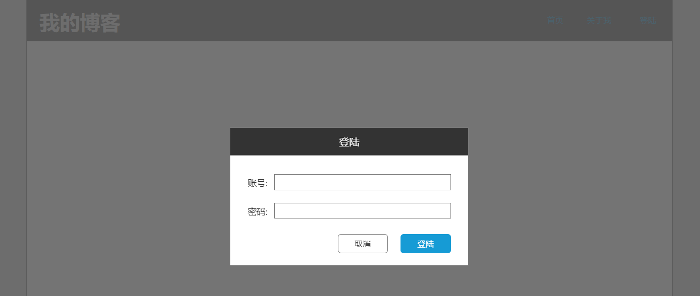

Axure 创建弹窗，主要涉及以下几个方面:
- 弹窗内容的元素放到动态面板里，这样所有元素都是动态面板的子元素，通过隐藏和显示动态面板来控制弹窗及其内容的可见性
- 弹窗在页面中是可见的，页面加载的时候隐藏弹窗，需要的时候才显示弹窗。这样编辑的时候可以看到弹窗的内容，否则就是一个黄色块，不方便编辑与查看
- 弹窗在所属页面的放置位置，不要挡住其他内容，放到页面的旁边即可
- 弹窗的动态面板居中显示 (Pin to Browser)
- 如果是需要重复使用的弹窗，可以创建为模板 (Master)，或者根据分模块的思想，也可以把弹窗直接作为 Master，然后在页面中引用
下面我们实现一个如图的弹窗功能:
创建弹窗
创建弹窗:
- 首先创建一个动态面板的模板，命名为 loginDialog
- 在上面放上登陆弹窗的组件
- 设置动态面板的属性，点击
Pin to Browser设置弹窗显示事的位置为屏幕居中，可以修改 Margin 的值，相对于居中进行偏移微调，让效果更能符合自己的需求
使用弹窗
在页面中使用弹窗:
- 创建一个页面
- 建议设置页面的尺寸为固定的，例如 Web，或者 iPhone8 等
- 在页面上放一个和页面宽度一样的矩形，在此矩形上布局我们的控件
- 把登陆窗口模板拖动到页面里，放在页面的旁边，不要遮挡页面中的其他内容，例如表格等
- 设置显示弹窗的交互 (例如点击按钮) 时，在 MORE OPTIONS 里选择 treat as lightbox (聚光灯效果)，这样弹窗显示时背景是半透明的遮罩
页面的上部是一个 Header 的模板，大家可以尝试下自己实现，其中:
- 模板中点击按钮登陆发出事件 onLogin (raiseEvent)
- 页面中对 onLogin 添加弹窗的显示动作
参考资料
Axure 9 全面教程：所有功能讲解+高级效果实现，这个视频非常不错，快速的介绍了 Axure 的核心功能。